앙 마르슈 (En Marche) - 에밀 졸라와 드레퓌스 사건
게시: 2017-05-09T00:06:31+09:00
마크롱이 프랑스 최연소 대통령으로 선출되었습니다. 마크롱이 소속된 정당의 이름은 En Marche ! (앙 마르슈) 라고 합니다. 이는 '행진 중인', '전진 앞으로' 정도의 뜻입니다. 마크롱이 이 정당 이름을 어디서 따온 것인지 조금 구글링 해보았는데, 특별히 무엇에서 따왔다는 정보는 못 찾았습니다. 저는 이 이름을 보고 생각나는 문장이 있었어요. 저는 불어 실력이 고딩 때 2년 정도 배운 게 전부인데, 그래도 인상 깊었거든요. La vérité est en marche et rien ne l'arrêtera. 진실은 전진 중이며 누구도 그것을 멈출 수 없다. 이는 에밀 졸라(Émile Zola)가 그 유명한 드레퓌스(Dreyfus) 사건 당시 한 말입니다. 드레퓌스 사건은 1894년 발생한 독일 스파이 사건이며, 이는 프랑스를 송두리째 흔들어 놓은 대사건이었습니다. 당시 프랑스의 제3 공화국은 혼란 속에서 겨우 안정을 찾아가고 있는 상황이었습니다. 1870년 보불 전쟁에서의 뼈아픈 참패와 1871년 파리 코뮌 사건으로 인한 쓰라린 기억들, 그리고 특히 1894년 카르노 (Carnot) 대통령이 이탈리아인 무정부주의자에게 암살된 충격적인 사건으로 인해서, 프랑스 국민들은 안정적이고 보수적인 정권을 갖기를 원했습니다. 그래서 결국 새로 구성된 정부는 군부와 카톨릭 등 우파의 지지를 얻기 위해 노력하는 상황이었습니다. 당시 군부 세력은 아직 나폴레옹 3세 시절의 귀족적인 전통 속에서 살고 있었고, 평민들로 구성된 무능한 공화국 정부를 내심 무시하고 있는 형편이었습니다. 아직 다수를 차지하고 있던 상류층 출신 군 장교들은 대부분 나폴레옹 1세가 1802년 창건한 생 시르 사관학교 (Ecole Spéciale Militaire de Saint-Cyr) 출신이었는데, 이들은 새롭게 등장하고 있던 실력파 폴리테니크 사관학교 (École polytechnique) 출신들과의 경쟁으로 인해 신경이 거슬리던 상황이었습니다.
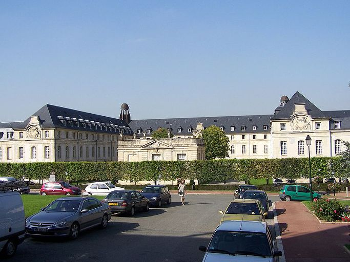
(현대의 생-시르 사관학교. 샤를 드 골도 여기 출신입니다.) 시절이 어수선하고 살기가 팍팍하면 보통 사람들은 누구 탓할 사람을 찾기 마련입니다. 그때 타겟으로 떠오른 것이 바로 유태인이었습니다. 반유태주의자인 드루몽 (Édouard Drumont)이 1886년에 출판한 '유태인들의 프랑스'라는 책은 무려 15만부가 넘게 팔려나가는 공전의 대 히트를 기록했고, 주요 언론들도 모두 유태인들이 프랑스 사회에 끼치는 해악에 대해서 공공연하게 떠들고 있었습니다. 이런 언론의 중심에는 드루몽이 이끄는 '자유 언론' (La Libre Parole) 이라는 신문이 있었습니다만, 그 외에도 많은 신문들이 이런 반유태주의에 공공연히 동참했습니다. 그리고 이런 분위기를 정부와 카톨릭 교회는 내심 부추기고 있었지요. 누군가 증오할 대상을 던져주면, 정부와 교회 등 사회 지도층에 대한 불만은 상대적으로 더 줄어들고, 또 국민들이 보수화되는 것을 촉진시키게 되었거든요.
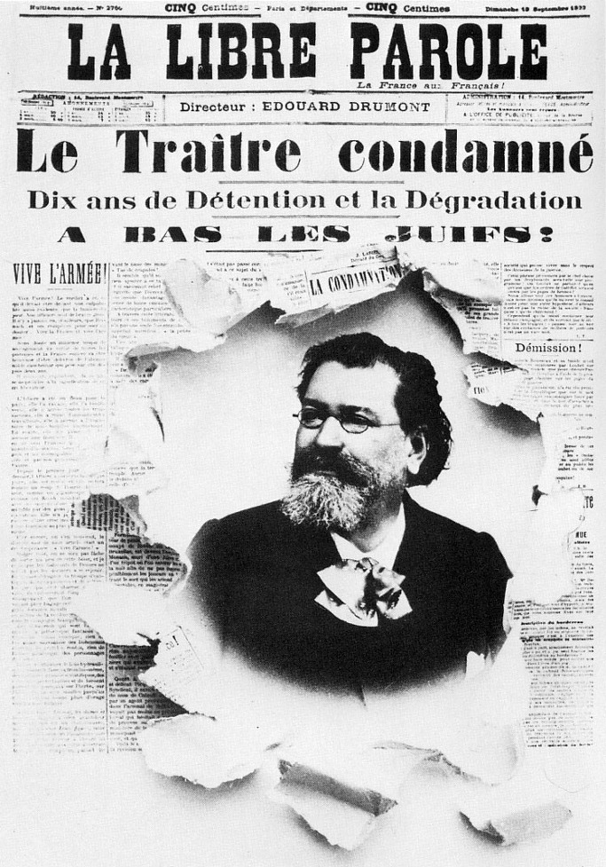
(드루몽과 그의 신문입니다. 제목은 "반역자 유죄 선고를 받다!" 물론 여기서는 드레퓌스를 말하는 것입니다. 밑에 씌인 A BAS LES JUIFS는 Down with the Jews, 즉 유태인들을 타도하라 뭐 그런 정도입니다. 우리나라에도 지금 현재 저런 매체를 운영하는 저런 사람들 꽤 있습니다.) 그러던 1894년 9월 26일, 프랑스 첩보부를 위해 일하던 독일 대사관 내 청소부 하녀가 쓰레기 통에서 6조각으로 찢겨진 편지 한장을 프랑스 첩보부에 보내 옵니다. 그 내용은 프랑스 육군 참모 본부의 기밀 문서 목록이었습니다. 이 문서는 매우 유명해져서 보통 bordereau (보드로, "명세서") 라는 이름으로 불리게 됩니다. 이 사건은 프랑스 군부를 긴장시킵니다. 참모 본부 안의 누군가가 프랑스 기밀 문서들을 독일에게 팔아넘기고 있었다는 증거였으니까요. 그들은 즉각 간첩 색출에 나섭니다. 다만, 단서라고는 이 "명세서" 한 장 뿐이었는데, 워낙 상부의 간첩 색출에 대한 압박이 심했으므로, 이들은 되든대로 억측을 섞어가며 무리한 추정 수사에 나서게 됩니다. 그 결과 가장 유력한 용의자로 선정된 사람이 바로 알프레드 드레퓌스(Alfred Dreyfus)라고 하는 포병 대위였습니다.
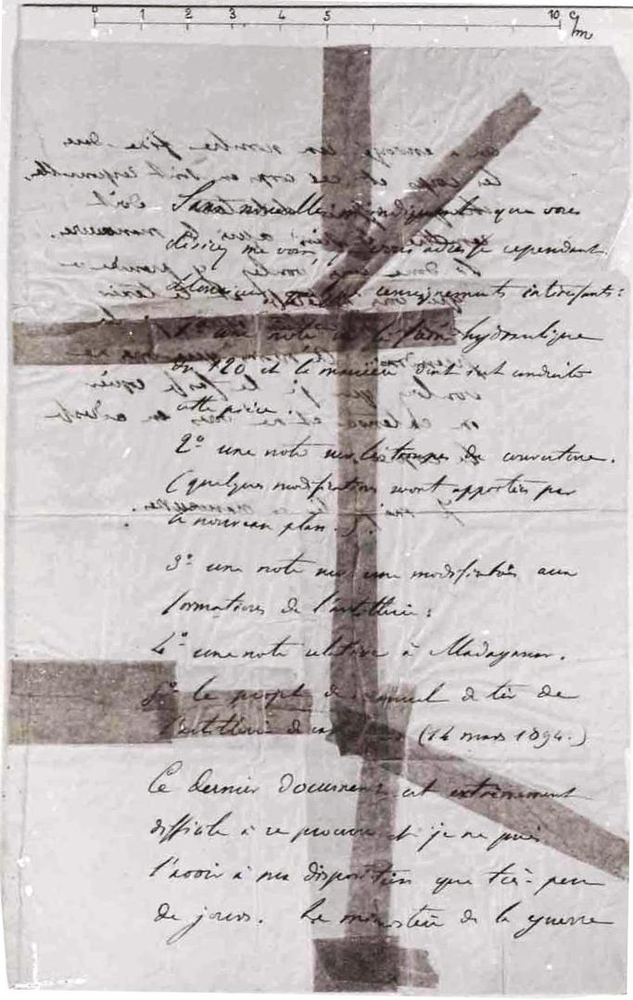
(이 문서가 그 유명한 '명세서' 즉 bodereau 입니다. 필기체라서 저는 거의 못 알아 보겠네요.) 알프레드 드레퓌스가 용의자로 지목된 이유는 다소 어이가 없는데, 일단 기밀 문서 목록으로 보아 그 간첩은 아마도 포병 장교일 것이라고 판단이 내려졌고 (나중에 밝혀진 실제 범인 에스테라지 Esterhazy 소령은 보병 장교였습니다), 또 독일하고 친한 것으로 보아 틀림없이 (원래 독일어 계통인데다 최근의 보불 전쟁의 패배로 인해 독일에 빼앗긴 지역인) 알사스 (Alsace) 출신일 것이다 (진범인 에스테라지 소령은 헝가리 출신이었지요) 라는 조건에 들어 맞았기 때문이었습니다. 결정적으로 그는 최근 참모 본부에 배속된 유일한 유태인이었습니다. 하지만 정작 그의 필체는 그 '명세서'의 필체와는 다소 달랐습니다.
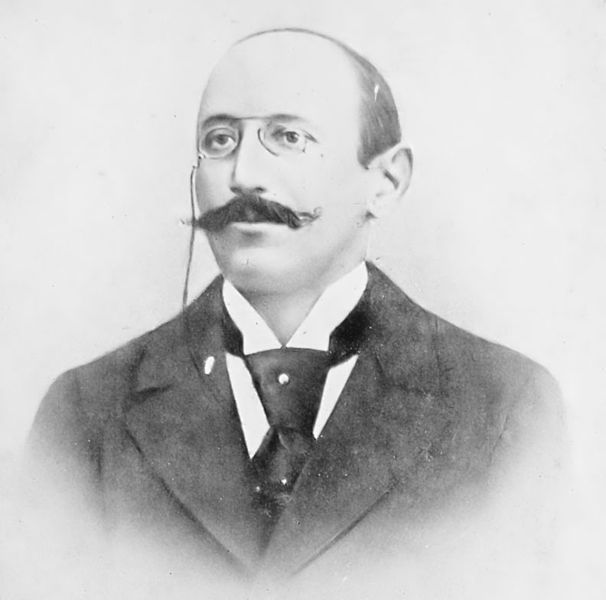
(이 양반이 알프레드 드레퓌스 대위입니다. 이 양반은 자신의 의지와는 전혀 상관없이 역사의 주인공이 됩니다.) 증거가 필요했던 참모부는 드레퓌스를 체포하여 자백을 강요했지만 드레퓌스가 결백을 주장하자, 그의 자택에도 압수 수색을 하면서 그 부인에게도 '남편이 체포되었다는 사실을 절대 입 밖에 내지 말라, 이 이야기가 새어나가면 독일과의 전쟁이 시작된다' 라며 협박했습니다. 결국 별의별 수단을 다 썼으나 증거를 찾을 수 없자, 프랑스 군부는 '드레퓌스가 모든 증거를 다 없애버렸다는 것이 가장 확실한 증거다' 라는 희한한 이론과 함께, '드레퓌스의 필체가 명세서의 필체와 다소 다른 것은 교활한 드레퓌스가 일부러 방첩부에게 혼란을 주기 위해 일부러 그런 필체를 쓴 것' 이라는 설명과 함께 비공개 재판을 실시했습니다. 드레퓌스의 가족들은 당연히 공개 재판을 요구했으나, 군부는 이 재판이 공개 재판으로 열릴 경우 '독일과 전쟁이 벌어져 국가의 안보가 위태롭게 된다'는 명분으로 끝내 비공개 재판을 실시했습니다. 사실 재판이 비공개일 수 밖에 없던 이유는 군부가 내놓은 증거물 파일이 텅텅 비어있었기 때문이었지요. 하지만 아무런 증거가 없다는 것은 군부에게는 문제가 되지 않았습니다. 군부는 '프랑스의 안보가 바로 이 재판에 달려있다. 프랑스 군부를 믿지 않고 저 유태인 간첩의 변명을 믿겠다는 말인가 ?' 라는 호소로 배심원들을 압박했습니다. 이 압박을 좀더 강하게 하기 위해, 군부는 원래 비밀리에 처리되어야 한다고 스스로 떠들던 드레퓌스의 체포와 재판에 대해 슬쩍 '자유 언론' (La Libre Parole)에 정보를 흘립니다. 당연히 자유 언론의 주필인 반유태주의자 드루몽은 온갖 나팔을 불어대며 이 사건에 대해 연일 대서특필했습니다. "거 봐라, 유태인들은 뒤통수를 치는 놈들이라고 내가 말하지 않았나 ? 이런 위험천만한 작자들이 프랑스 정부와 군대 요직 곳곳에 도사리고 있다 ! 이번 기회에 이들을 몰아내자 !"
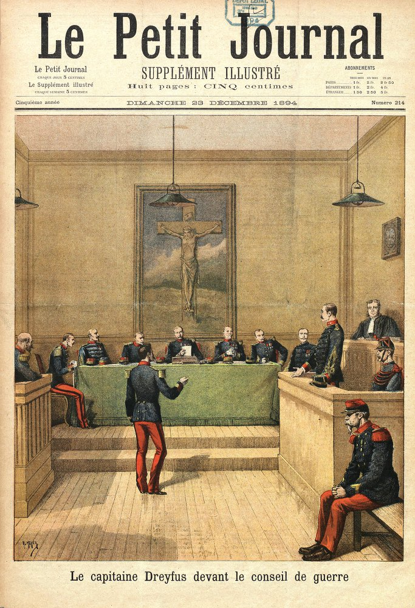
(1894년의 1차 재판입니다. 물론 군법회의지요.) 그럼에도 불구하고 군사법원의 배심원들이 워낙 빈약한 증거 때문에 유죄 선고에 대해 망설이자, 프랑스 군부에서는 이탈리아 대사관 무관이 "D"라는 이니셜로 시작되는 이름을 가진 장교를 범인으로 지목했다는 편지가 있다는 사실을 밝힙니다. 하지만 그 증거물을 보자는 변호인단의 요구는 '국가 보안상의 이유'로 거부되었습니다. 결국 드레퓌스는 종신형을 선고 받고 프랑스 령 적도 기아나(Guyana)의 '악마의 섬'이라는 곳으로 이송되고 맙니다. 항소를 제기했지만 재판부에 의해 '이유없다'며 기각되고 말았지요. 그리고 프랑스 대중은 '유태인 = 뒤통수'라는 것만을 기억했고 드레퓌스라는 사람에 대해서는 차츰 잊어가고 있었습니다.
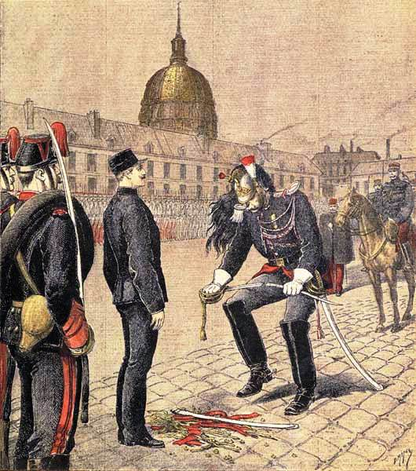
(그의 강등식은 나폴레옹이 졸업한 파리의 Ecole Militaire에서 벌어졌습니다. 생도들이 도열한 가운데, 차렷자세로 선 그의 제복에서 금단추를 하나씩 거칠게 다 뜯어내고, 그의 계급장도 뜯어낸 뒤, 그의 칼을 빼앗아 부러뜨려 그 앞에 내동댕이치는 의식이었습니다. 이때 드레퓌스는 차렷자세를 유지하려고 애쓰는 모습이었으나 분노와 수치로 부들부들 몸이 떨리는 것이 모두에게 명백히 보였다고 합니다.) 그런데 드레퓌스가 기아나로 끌려간지 1년이 훨씬 넘은 뒤인 1896년 3월, 또 다른 기밀 편지가 독일 대사관으로 가던 중에 프랑스 첩보부에게 입수됩니다. 그리고 그 필적이 드레퓌스를 유죄로 만든 그 '명세서'의 필적과 동일하다는 것이 밝혀집니다. 당시 방첩 부대의 책임자였던 피카르 (Georges Picquart) 중령이 이 사건을 수사하던 중, 결국 드레퓌스 사건의 진범은 에스테라지 소령이라는 사실을 밝혀냅니다. 피카르는 이 사실을 프랑스 참모본부장인 봐드프르 (Raoul Le Mouton de Boisdeffre) 장군에게 알렸습니다. 이제 드레퓌스는 누명을 벗고 돌아올 수 있었을까요 ?
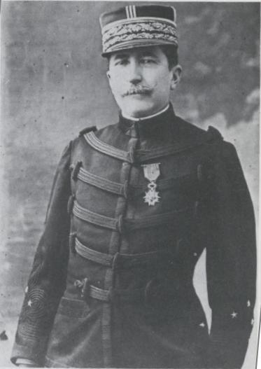
(잊혀질 뻔한 드레퓌스 사건을 다시 되살린 장본인이자 프랑스 육군의 양심인 피카르 중령입니다. 그는 드레퓌스 사건으로 온갖 곤경에 처합니다만, 결국 군에 복직되어 장군까지, 또 최종적으로 전쟁성 장관으로까지 승진하게 됩니다.) 어림없는 일이었습니다. 봐드프르 장군 및 프랑스 군 수뇌부에게 '알고보니 우리가 2년전 실수를 저질렀네요'라는 사실은 받아들일 수 없는 것이었습니다. 프랑스 군 수뇌부에게 국가 안보보다는 자신들의 체면과 이익이 더 중요한 것이었습니다. 피카르 중령은 방첩 부대에서 해직되어 일반 연대 지휘관으로 보직 변경되었습니다. 진범인 에스테라지 소령은 1년 뒤에야 '그냥 건강상의 이유로' 조용히 제대하도록 했습니다. 오히려 드레퓌스 사건의 수사 책임자였던 뒤 파티 (Armand du Paty de Clam) 소령이 그를 따로 만나 '반드시 너를 보호해줄테니 입다물고 얌전히 있으라'는 약속과 당부를 할 정도였습니다.
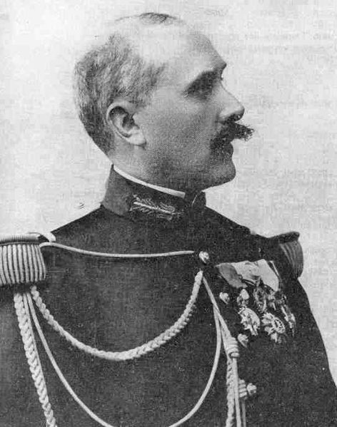
(드레퓌스를 체포한 장본인인 뒤 파티 소령) 상황은 드레퓌스에게 점점 더 안 좋게 돌아갔습니다. 그는 외딴 열대 섬에서 이미 고생스러운 삶을 살고 있었는데 갑자기 탈출이 염려된다며 밤에는 감방에서 쇠고랑을 차는 곤욕을 더 하게 되었습니다. 또 참모본부에서는 보수파 신문들에게 슬쩍슬쩍 드레퓌스에게 불리한 이야기를 흘렸고, 그런 신문들에서는 그런 사실들을 보도하며 '역시 믿지 못할 유태인놈들'을 강조했습니다. 심지어 절대 기밀이라던 그 '명세서'의 카피본까지 신문에 그대로 보도될 정도였고, 신문에서는 이것만 보더라도 (사실 뭐 볼 것이 없었는데) 드레퓌스가 명백한 반역자라고 떠들어댔습니다. 하지만 드레퓌스의 가족들과 그 변호사는 그대로 포기할 수 없었습니다. 그리고 이들을 돕는 지식인들이 하나둘씩 늘어나기 시작했습니다. 그리고 이들은 당대의 대문호인 에밀 졸라를 1897년 말 경에 찾아갑니다. 에밀 졸라가 유태인들에 대한 증오와 차별이 위대한 프랑스에는 어울리지 않는다는 내용의 글을 썼었기 때문이었지요. 하지만 그런 졸라조차도 처음에는 드레퓌스의 무죄에 대해 무척이나 의심했다고 합니다. 그도 접하는 것이 주로 그런 신문들과 여론 뿐이었으니까요. 하지만 드레퓌스의 변호인들이 보여준 명백한 증거들에 의해 졸라도 결국 드레퓌스 구명 운동에 동참하게 됩니다.
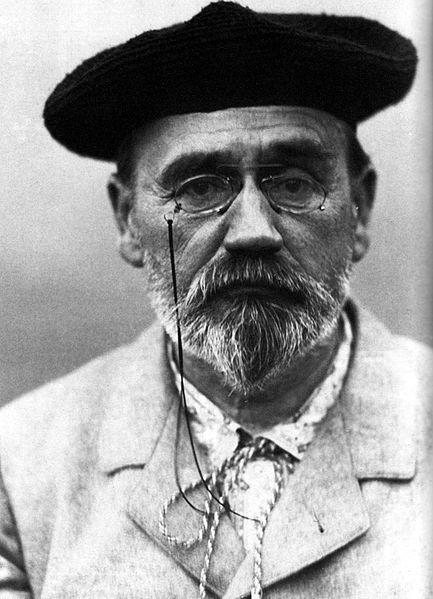
(드디어 졸라 등장. 괜찮아, 졸라님이 다 해결해 주실거야, 그럴거야, 그럴거야.....?) 사실 졸라로서는 드레퓌스 구명 운동에 뛰어드는 것은 아무런 이익도 없고, 또 여태까지 쌓아놓은 문학적 업적과 명성을 다 허물어뜨릴 수 있는 모험이었습니다. 당시에는 워낙 애국주의와 반유태주의가 기세등등한 분위기였거든요. 하지만 그는 이렇게까지 진실이 은폐되고 억울한 사람이 누명을 쓰는 것을 보고 참는 것은 지식인으로서 있을 수 없는 일이라고 생각하여 나섰던 것입니다. 그는 피가로 (Le Figaro) 지를 통해 드레퓌스 구명 운동을 펼치기 시작했습니다. 그 결과 1898년 1월, 드디어 드레퓌스 사건에 대한 항소심이 열리게 되었습니다. 여기서는 진실이 이길 수 있었을까요 ? 어림없는 소리였지요. 프랑스 군부는 이번 재판에 대해 철저히 준비를 했습니다. 무려 3명의 필적 전문가가 나와 '명세서'의 필적은 에스테라지 소령의 것이 아니라고 증언을 할 정도였습니다. 처음에는 에스테라지 소령에 대한 기소조차 필요없다는 의견이었으나, 오히려 그의 누명을 벗겨주기 위해서 그에 대한 군법 회의가 열렸고, 바로 그 다음날 만장일치로 그를 무죄 방면하는 쇼우가 벌어졌습니다. 하지만 이런 소동이 그렇게 얌전히 끝날 수는 없었습니다. 이런 대소동을 일으킨 장본인인 피카르 중령에 대해 손을 봐주어야 했지요. 그는 '군 기밀 문서를 민간인에게 유출'시켰다는 죄목으로 체포되어 몽 발레리앙 (Mont-Valérien) 군 교도소에 수감시켰습니다. 물론 그보다 더 한 기밀 문서가 우익 신문에게 계속 유출된 것에 대한 수사나 추궁은 전혀 없었지요.
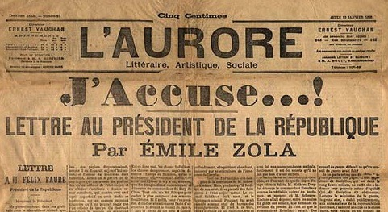
(나는 규탄한다 !) 에스타르지 소령이 무죄방면된 다음날인 1월 13일, 훗날 제1차 대전 때 호랑이로 불리게 되는 클레망소(Clemanceau)가 출판하던 오로르 (L'Aurore, 오로라) 지의 제1면에 졸라의 기고문이 실립니다. 엄청나게 큰 활자로 찍힌 제목은 바로 J'accuse ! 원래 졸라는 '프랑스 대통령께 보내는 편지'라고 제목을 지으려 했으나, 클레망소가 그것을 좀더 자극적이고 함축적인 J'accuse !로 바꾸도록 했다고 합니다. 이 기사에서 졸라는 강한 언사로 드레퓌스 사건의 부당함과 명백한 증거들을 나열하고, 프랑스 정부가 이런 반유태주의에 대해 방관하고 있는 것을 규탄했습니다. 이 기사의 반향은 엄청났습니다. 에밀 졸라의 열정어린 문장을 보고 프랑스 인들의 양심이 살아났느냐고요 ? 천만에 콩떡이었습니다. 그동안 보수 언론과 종교계에 의해 철저히 세뇌된 반유태주의가 오히려 더 폭발했습니다. 파리와 프랑스령 알제리 등에서는 '이런 괘씸한 유태놈들과 그 추종자들(이하 종유세력)이 감히 위대한 프랑스를 모욕해 ?' 라며 폭동이 일어나 유태인들의 가게가 불에 타고 사람이 다쳤습니다. 물론 그런 와중에도 '읽어보니 이건 좀 아닌 것 같다' 라며 드레퓌스 편을 들어주는 사람들도 생겨났습니다. 그러나 그 속도는 느리고 활동은 조용했습니다. 당장 졸라는 명예훼손죄로 기소되었고, 특히 졸라에 의해 거짓말장이가 되어 버린 그 세 명의 필적 감정 전문가들이 따로 졸라를 고소했습니다. 불과 1달 정도 후에, 졸라는 유죄 판결을 받았고 명예훼손에 해당하는 법정 최고형인 1년 징역에 3천 프랑의 벌금형에 처해졌습니다. 졸라는 항소를 했고, 결국 항소심에서도 유죄 판결을 받게 되는데, 졸라는 유죄 판결이 나기 직전에 비밀리에 영국 런던으로 도주했습니다.
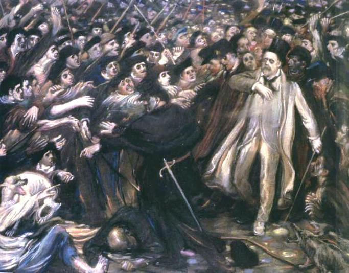
(재판장에서 나가는 졸라를 비난하며 달려드는
박사모
보수측 군중들의 모습입니다.)
졸라의 도주는 보수층의 승리로 받아들여졌습니다. 주요 언론에서는 '거봐라, 자기가 유죄라는 것을 아니까 야반도주한 거 아니겠냐' 라며 더욱 큰 소리로 졸라를 비난했지요. 특히 주데 (Ernest Judet)가 발행하는 "Le Petit Journal"이라는 신문에서는 졸라의 개인적인 내용, 즉 원래 이탈리아 계였던 그의 아버지가 1830년 대에 프랑스 외인부대의 건설 공사 관련하여 뇌물을 받았다가 결국 쫓겨났다는, 졸라조차도 모르고 있던 가정사까지 들춰내가며 졸라 개인과 그 가족에 대한 비방에 열을 올렸습니다. 한마디로 '그런 아버지니까 저런 아들이 나왔지'라는 비아냥이었지요. 졸라는 많은 팬을 잃었고, 이전에 받았던 레종 도뇌르 훈장도 박탈당했으며, 또한 금전적으로도 많은 손실을 입었습니다. 그의 도주에 대해 정부는 그의 재산을 압수하여 헐값에 공매에 붙이는 보복 조치를 취했던 것입니다.
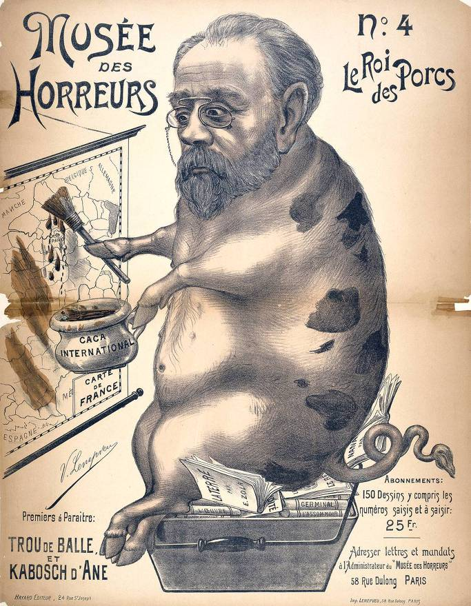
(당시에 출판된 졸라를 비난하는 그림입니다. 돼지 졸라가 프랑스 지도에 '국제적 똥'을 칠하고 있습니다. 좌우측 상단의 큰 글씨는 '혐오의 박물관' '돼지들의 왕' 이라고 적혀 있습니다.) 하지만 결국 진실은 승리하는 법입니다. 졸라는 1897년 11월에 "La vérité est en marche et rien ne l'arrêtera." 즉 "진실은 행진하고 있고 그 어떤 것도 그를 막을 수는 없다"라고 쓴 바 있었고, 그 예언은 그대로 실현되었습니다. 1898년 한해 거의 전 프랑스가 드레퓌스 반대파와 드레퓌스 옹호파로 나뉘어 토론과 논쟁, 심지어 결투 (권총으로 하는 진짜 결투)를 벌였고, 이탈리아 대사관 무관이 썼다는 'D' 이니셜 어쩌고 하는 편지를 위조했던 수사 담당자 앙리 중령 (Hubert-Joseph Henry)은 결국 '그 편지는 자기가 위조해낸 것'이라고 자백하고는 군 교도소에 수감되었다가 면도칼로 자살하고 말았습니다.
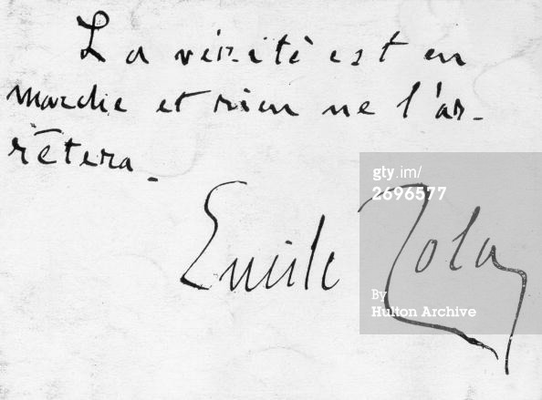
"La vérité est en marche et rien ne l'arrêtera." par Emile Zola 이후로도 진실 규명에는 많은 시간이 흘렀습니다. 1899년 좀더 보수적인 성향이 강한 지방인 렌느(Rennes)에서 열린 항소심에서, 다시 한번 드레퓌스는 유죄 판결을 받았습니다. 이때 에스테라지 소령은 이미 외국으로 도망친지 오래 뒤였지요. 하지만 당시 프랑스 대통령이 '유죄인 드레퓌스를 국민 화합을 위해 사면'해주겠다는 제안을 했지요. 드레퓌스가 이 제안을 받아들인다는 것은 패배를 뜻했습니다. 왜냐하면 그것을 받아들인다는 것은 일단 유죄를 인정한다는 뜻이었으니까요. 많은 진보파에서는 그가 그 사면을 거부하기를 바랬습니다. 하지만 그렇게 바라는 진보파 인사들은 매일 맛있는 프랑스 요리를 먹고 포근한 침대에서 자는 사람들이었으나, 당사자인 드레퓌스는 벌써 6년째 적도의 끔찍한 섬에서 쇠고랑을 차고 중노동을 하는 신세였습니다. 더 이상의 육체적 고통을 이기기 힘들었던 그는 그 사면을 받아들입니다. 그가 완전히 누명을 벗은 것은 1906년이나 되어서였습니다. 한편, 졸라는 어떻게 되었을까요 ?
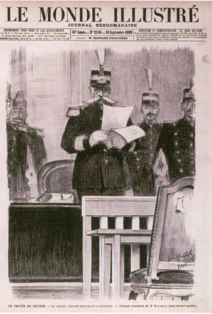
(1899년의 재심에서도 드레퓌스가 유죄라고 선언하는 프랑스 군사법원) 당대 유럽 제일의 문호이자 대단히 유명한 인사였던 졸라는 의문사를 당했습니다. 그는 1902년 9월 29일, 자택에서 자다가 어이없게도 일산화탄소 중독 (흔히 말하는 연탄가스 중독)으로 죽었습니다. 그는 이미 드레퓌스 사건으로 군부와 교회 등 우파로부터 많은 암살 위협을 받고 있었는데, 검사 결과 그의 침실 굴뚝이 매우 부적절하게 막혀 있는 것이 발견되었습니다. 하지만 누가 그 굴뚝을 그렇게 막았는지에 대해서는 결국 밝혀지지 않았습니다. 수십년 뒤, 어떤 지붕 공사기술자가 '정치적 이유로 졸라의 굴뚝을 내가 막았다'라고 유언을 남기고 죽었는데, 진실이야 모르지요. 어쨌거나 우파는 그의 죽음에 대해 신이 났습니다. 가령 로슈로프 (Henri Rochefort)는 신문 기고를 통해 '드레퓌스가 진짜 간첩인 것을 뒤늦게 깨달은 졸라가 죄책감에 자살을 한 것'이라며 선전에 열을 올렸지요.
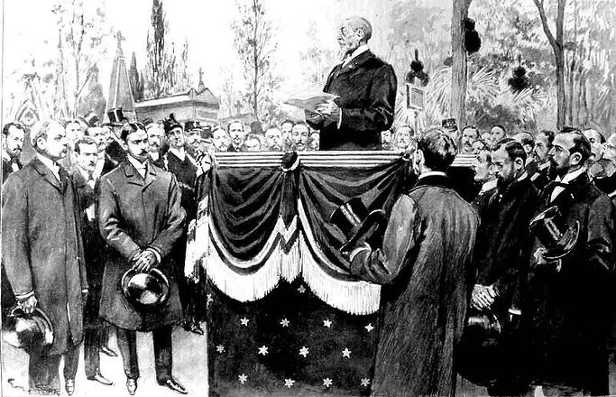
(물론 이 위대한 지성인의 죽음을 안타까와 하며 모인 조문객도 수천명에 달했습니다. 그림은 그의 장례식 모습입니다.) 아까 잠깐 언급한, 이탈리아 대사관 편지를 위조했다가 자살한 앙리 중령의 죽음은 우파에서 어떻게 받아들였을까요 ? 처음에는 드루몽 등 우파는 '이게 어찌된 일이냐 그럼 정말 드레퓌스가 무죄냐' 라고 당혹해했으나, 곧 '자기 자신의 명예와 목숨을 바쳐 조국의 안보를 지키려 했던 영웅'으로 포장이 되었습니다. 이 모든 위조가 국가 안보를 위해 수행한 성스러운 작전이었다는 것이지요. 그의 유가족을 위해 우파에서는 전국적인 모금 운동을 펼쳤는데 무려 13만 프랑이 모금되었다고 합니다.
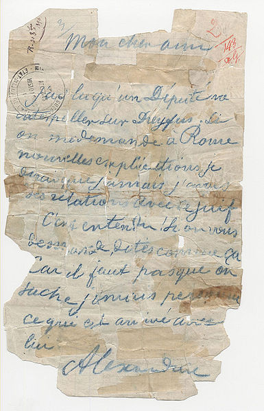
(앙리 중령이 조작해서 법원에 증거물로 제출한 이탈리아 대사관 무관의 편지입니다. 조작이건 은폐건 모두 조국의 안보를 위한 구국의 결단이었다~~ 라는 거지요.) 프랑스가 위대한 것은 1908년 6월 4일, 처음에는 몽마르트 묘지에 묻혔던 그의 시신을 조국을 빛낸 위인들을 모시는 장소인 팡테옹으로 이장했기 때문입니다. 그때까지도 '뭐가 어찌 되었건 드레퓌스는 간첩이고 유태놈들은 뒤통수치는 놈들이다'라며 이를 갈던 우파들이 군부나 종교계에 많았으나, 결국 프랑스 대중의 합의된 의지는 '진실을 위해 노력하여 프랑스의 명예를 드높인 지성인'으로서 졸라를 기리는 것이었습니다. 어떻게 보면 드레퓌스 사건은 프랑스의 수치입니다. 아마 드레퓌스가 그대로 기아나에서 죽어 잊혀졌으면 더 좋았을지도 모르지요. 하지만 그런 구린 구석이 드러나더라도 진실을 외면하지 않는 것이 프랑스 지성인들의 모습이라는 것을 졸라와 그의 동료들은 보여주었고, 비록 때늦은 감은 있으나 프랑스 국민들은 그를 팡테옹에 이장함으로써 그에 대한 예의를 표했습니다. 제가 프랑스를 위대하다고 생각하는 이유는 바로 그것입니다.
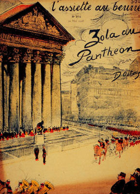
(Zola au Pantheon ! 졸라를 팡테옹으로 !) 팡테옹을 나서면서 중앙의 군상 조각상을 유심히 보다보니, 국민공회 (La Convention Nationale)라는 글씨 위에 흐린 색으로 다른 글자도 씌여 있더군요. "VIVRE LIBRE OU MOURIR"
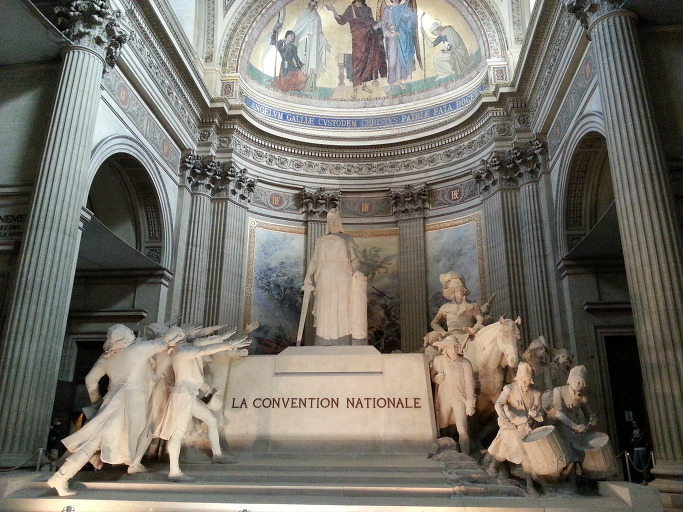
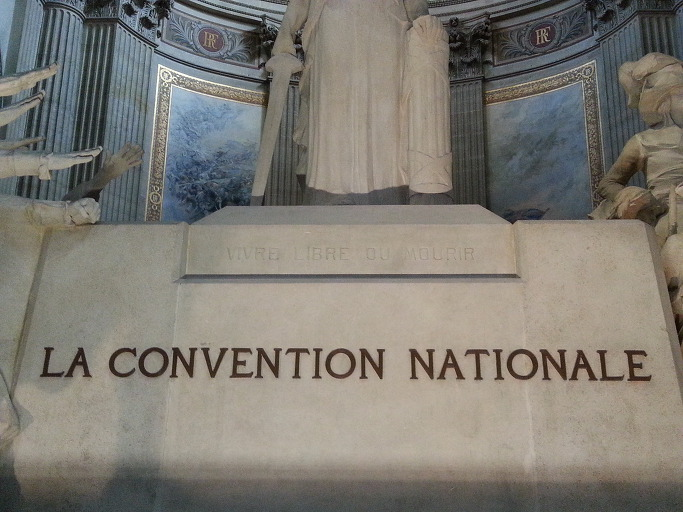
(다시 제가 직접 찍은 사진이에요.) 제가 비록 고딩 때 잠깐 배우다 만 불어지만 금방 알아보겠더군요. "Live free or die", 그러니까 "자유 아니면 죽음을" 이라는 글귀였습니다. 에밀 졸라의 무덤을 보고 나오면서 그 글귀를 보니까 마음이 찡하더군요. 프랑스 인들은 이렇게 많은 투쟁과 희생, 혼란과 갈등을 겪으며 200년에 걸쳐 민주주의를 이룩했는데, 우리는 미국에 의해 너무 쉽게 민주주의를 선물받아서 그 소중함을 잘 모르고, 또 그래서 민주주의의 뿌리가 얕은 것인가 하는 생각이 들었습니다.